「モチ娘、サークルをUEC大学公認まで育成ダービー」の話
この記事はクソ長い記事となっています。具体的には読み切るのに10分はかかります。時間と通信量を爆撃することになるので、読む際はきをつけてください！また、この記事は全編暖かみのある手打ちhtmlでお送りしています。
はじめに
この記事は、UEC advent calendar 2023 の13日目（12/13）の記事です。昨日は、「レプリカ」さんの 全国行脚振り返り(食べ物多め) でした。 筆者もCHUNITHMはプレイしているけど、全国行脚という考えは無かったな……。時間を錬成してやってみたいと思います（ほんとに時間あるんか？おまえ）。
UEC Advent Calendar 2023
電通大生による電通大生のためのAdvent Calendar 2023 これはなに？ 12/1から12/25のクリスマスまで、毎日電通大生の有志が記事を書いて、カレンダーを電通大に染める企画です。例年、知らぬ間に有志によって動いています。
Go Advent Calendar Pages- はじめに
- きみは誰ですか？
- 「東方Project同好会 電々。通信」とは？
- （非公認時代１：2019.04 ～ 2020.03）でんまる１年目
- （非公認時代２：2020.04 ～ 2020.11）悲劇のコロナ禍！！！ でんまる２年目前半
- （準公認時代１：2020.10 ～ 2021.03）準公認と過去一で分裂しかけた話 でんまる２年目後半
- （準公認時代２：2021.04 ～ 2022.03）世代交代の年……（？） でんまる３年目
- （準公認時代３：2022.04 ～ 2022.05）ついに学友会公認へ！ でんまる４年目①
- （学友会公認時代：2022.06 ～ 2022.12）最難関、大学公認を獲得できるか？ でんまる４年目②
- （大学公認時代１：2023.01 ～ 2023.03）念願の教室使用……！ でんまる４年目③
- （大学公認時代２：2023.04 ～）ついに本当に世代交代……。 でんまる５年目
- 【要点箇条書き】結局、学友会準公認・学友会公認・大学公認って箇条書きで何をする必要があるの？箇条書きで教えて！
- いま振り返って思うこと（おわりに）
なお、本記事は 学友会準公認に関わるところの見出しは橙色で、 学友会公認に関わるところの見出しは藍色で、 大学公認に関わるところの見出しは紫色で表現します。 また、上位の役割は下位の役割も含みます。 なので、上に進めば進むほどお仕事が増えます。一応最後のほうに箇条書きで仕事を思い出せるものだけまとめています。そして、ここに書かれていることを実践したことによる損害や不利益は、筆者は一切責任を負いません。
きみは誰ですか？
みなさん、こんにちは。もっちゃん（@sakuramochi0708）です。ついにM1になってしまいました。M1にもなってAdvent
Calendarの枠をとっていいものか悩みましたが、んまあ、いいでしょ（知らんけど）。
また、Twitter（今はXとかいうらしい）では、「モチ娘」（例１、例２）などで大変お騒がせしております。今後もご迷惑をおかけしますね。
今回は、昨年度のUEC Advent Calendar
2022で話題に出したもう一つのテーマ「「モチ娘、サークルをUEC大学公認まで育成ダービー」の話（旧名称：0.5から育てる大学公認サークルの作り方）」について、言える範囲で書きたいと思います。えーと、ちょっと濁しているのは、別に姑息な手を使ったわけではなく、単に「筆者のたまたまの運や環境」というだけで、ここに書いても全く参考にならないからです。（まあ、そういうところに実は秘訣があったりしなくもないですが、こんなことを公開情報にしてしまったら二度と使えなくなってしまうので……。企業秘密っ）
今後サークルを設立してわいわいしたい後輩学生のために、ロストテクノロジーにならないために、でんまるの歩んだ歴史を交えながら書いていきたいと思います。（背景がわからないと、どうしていきなりこんな考えになったんよ？って話になるので。なので、アウトラインだけ見たい人は情報を取捨選択してね。）
「東方Project同好会 電々。通信」とは？
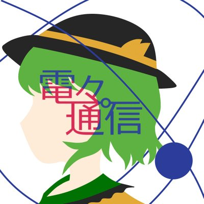サークルを育てた話をするまえに、「お前はどのサークルについて言ってんじゃい！」とクレームが飛んできそうなので、説明します。
東方Project同好会 電々。通信（とうほうぷろじぇくとどうこうかい でんでんまるつうしん）（
でんでん。つうしんじゃないよ
）（略称：でんまる）とは、2019年4月に発足した、東方Projectが好きな人が「好き」を表現したり遊んだり、旅行したりするサークルです。定期部会として、隔週で毎週水曜or木曜に大学の教室と、Discordで活動しています。
最近では調布祭で、バーチャルライブ研究会（VLL）とアイドルマスター研究会（D＠NPEN）との合同企画「ニコニコ御三家調会議」を開催しました。また、博麗神社例大祭にも定期的に参加したり、他大学との交流会にも定期的に参加したりして、ほのぼのわいわい活動しております。
東方Projectにわかでも大丈夫です。少しでも知っている人で興味のある人がいましたら、ぜひ公式Twitter（@uec_Touhou_）の固定ツイートからお越しください！（アンダーバーの数に注意！）
本日は調布祭の前日準備です！
— 電々。通信（でんまる） (@uec_Touhou_) November 23, 2023
3団体（ @uec_VL_Lab 、 @uec_imas ）の等身大ポスターが揃いました(´｡✪ω✪｡ ` )
ぜひ、お越しください！
#でんまる #調布祭 pic.twitter.com/i3DRtUVwgC
そんな電々。通信ですが、学友会準公認は2020年10月（創部1年10カ月）、学友会公認は2022年05月（創部3年2カ月）、大学公認は2022年12月（創部3年9カ月）という、VLLとかいうばけもんサークルは除くだいぶ早いスパンで大学公認を頂くことができました。（ちょうど３歳馬が日本ダービーに勝つくらいですか？絶対違うが）
でんまる１年目（非公認時代１：2019.04 ～ 2020.03）
※ 今後、新歓に関わることだけは翌年にまとめて書きます。（例：2020年4月の新歓は２年目に書く）
でんまるの原点
電々。通信は、「大福」さん（@udongedaifuku）を中心メンバーとして2019年4月に発足しました。（緩く活動できる東方サークル欲しくない？とTwitterで呟いたらたくさんの賛同を得たから作ったそうです。詳細は電々。通信部誌「電々。新聞 第肆号」に掲載されています（4p……。たぶんこの記事より薄いけど内容は濃い）
本日の秋例大祭に先駆けて、デジタル版の頒布を開始しました！
— 電々。通信（でんまる） (@uec_Touhou_) November 11, 2023
冊子版は例大祭と調布祭（学園祭）のみの予定ですので、欲しい方はおまちしております！
#でんまるhttps://t.co/ieYiLT0w0W
新入生の皆様、ご入学おめでとうございます！
— 電々。通信（でんまる） (@uec_Touhou_) March 29, 2019
当サークルでは何をしているのかなど紹介をしようと思っていたのですが…なんと当サークル、立ち上げたばかりで何もしてません。何も決まってません。強いて言うならオープンな楽しいサークルを作りたいという指針がある程度です。#uec19#春から電通大
こんばんわ！
— 電々。通信（でんまる） (@uec_Touhou_) April 10, 2019
未だ名称は未定ですが部員7人+友達1人のメンバーで記念すべき第1回東方カラオケが始まりました！！
初っ端からだいぶ飛ばしてます！！ pic.twitter.com/fqEm3lv6XP
一方そのころ、学域１年生としてサークル探しをしていた筆者は、工学研究部のじま先輩（高校の先輩）とひげさんから女の子にされることが確定（？）していました（どういうこと？）。そんななか、３月までには一切無かった（※）東方サークルとかいう第４勢力が急に現れたもんですから、そちらにも入部することにしました。これがでんまるとの出会いです。
※ 当時は弾幕を楽しむ方の非公認東方サークル（@uec_Touhou）がありました。いまでも活動しているんですかね……？
【悲報】サークルの先輩に女の子にされることが確定（？）
— もっちゃん@桜餅 (@sakuramochi0708) April 3, 2019
なんか突然サークルで第4勢力が現れて、サークル候補に激震が走ってる
— もっちゃん@桜餅 (@sakuramochi0708) April 13, 2019
（画像最も右が筆者。グループ学習室１にで実施）
本日来ていただいた皆様、ありがとうございました！
— 電々。通信（でんまる） (@uec_Touhou_) April 23, 2019
このような感じで活動しておりました、とても楽しい集まりでしたのでぜひそのうちに第2回を開催したいですね pic.twitter.com/727r7WB1Zz
はじめての調布祭と議事録のすゝめ
さて、月日がたつのが早いもので、６月となりました。このあたりから「調布祭」という単語がでんまるに入ってくるようになります。絶対参加したほうが楽しいよね！しかし、参加費３万円！！（当時）。うーーーーーーん。当時の部員で折半しました。ここが非公認の楽しいところでもあり辛いところでもあるんですけどね。
初めての参加ということもあり、マイクラの東方ワールドを展示しようね！だの、大会やろうぜ！（当時は幻走スカイドリフトというゲームを提案していましたがUEC
Wirelessに敗北……。）だの様々なアイデアがでてきました。しかし、誰も議事録をとっていなかったので、絶対に忘れます。はい。大福さんは「３歩歩いたら忘れます！」と自称しているレベル（ほんと）なので、やばいです。なので、議事録を筆者はとることにしました。この議事録は、現在でもしっかりとられていて、サークルの運営や決め事の参考になります。また、公的機関への重要な書類となります（後述）。なので、サークルを運営するためには、議事録はとっておきましょう。
初めての調布祭では「ポストカード頒布」、「落書きノート」、「第１回非想天則大会」、「第１回深秘録大会」、「突発クイズ大会」や原作体験、カードゲーム等をしていました。はじめてなのにA-202とかいうクソデカ部屋を頂いたので大変困惑していました…。ただ、、打消し線がひかれているもの以外は成功したので、とても嬉しかった記憶があります。（ただ、いろいろドタバタはあるんですけどね）
右：当時の設営。今思うと現状単独で対面調布祭に参加したの、最初で最後かもしれない。（たてかんはA4をつなぎ合わせています）
調布祭告知漫画
— 電々。通信（でんまる） (@uec_Touhou_) November 21, 2019
作者:えとりあ(@etoriAtelier117 ,@etokondoria ) pic.twitter.com/Ttx8rErSIP
設営、ヨシ！ pic.twitter.com/Nb5PIH274x
— 電々。通信（でんまる） (@uec_Touhou_) November 22, 2019
右：日曜昼に行われるはずだった深秘録大会。人が来なかった。（日曜午後からMIKUECライブあったしね…。）
終了です！優勝者はけーまさんです、おめでとうございます！
— 電々。通信（でんまる） (@uec_Touhou_) November 23, 2019
常にとても強い人達による試合が展開されており見てて楽しかったです！！
参加者及び手伝っていただいた部員の皆様、本当にありがとうございました！ pic.twitter.com/T8ZUHX5zyw
現在人が集まらなすぎたので部内戦が行われています。
— 電々。通信（でんまる） (@uec_Touhou_) November 24, 2019
これはこれで楽しいのでヨシ！(一抹の悲しさを添えて) pic.twitter.com/PAzv1BOzPd
あっ、アンケートとかいうのを来場者にとると、とても面白い結果がでるし、来年度以降の参考になるので、余力があるとやるといいですよ！（23年度のアンケート集計をまだやっていないことを横目に……）
ちなみに、筆者さん、この時から漫画・アニメーション研究会（電通大まにけん）の副会長（実質会長）をやっていました。
年度末最後の活動をおえて、さて新歓かな。んーまあ、非公認サークルだから新歓委員会主催のイベントに参加できないけど、大丈夫やろ～～～と思って活動を終えました。まさか、あんなことになるなんて・・・・・・・・・・・・・・・・・・・・・・・・。
本日は予告道理本当に遊んだだけでした。
— 電々。通信（でんまる） (@uec_Touhou_) January 21, 2020
私はダプスポを無限にやってたのですが避けれん避けれん言ってたら絵が生えてきていました。ちなみに私が見れたのはキスメまでです(下手)
恐らく期末前の部会はこれが最後です。考査が近い中きてくれた皆様ありがとうございました！ pic.twitter.com/OXuytSWM8Q
悲劇のコロナ禍！！！ でんまる２年目前半（非公認時代２：2020.04 ～ 2020.11）
新歓……？
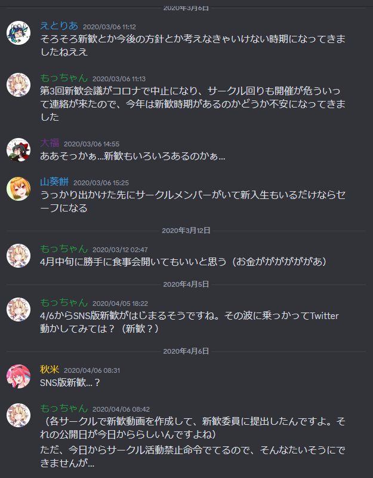いや、そんなん予想できるわけないやろ！！！！
この時、工学研究部の20年度新歓担当になっていたので、この情報を利用しながらでんまるでもうまぁく進めようとしてたんですが、サークル活動禁止命令！。…………へ？？？いやいや、は？？。どのサークルも終了です。お疲れさまでした。電通大生の次回作にご期待ください。
……そんなことも言ってられないのですが、はい、そうです。covid-19によるパンデミックが始まりました。大学は封鎖。もちろん対面新歓なんてもんはおじゃん。どどどど、どうしましょう？？？
ただ、幸いにも新歓委員会が「オンライン新歓」たるものを考えてくださいました。急遽とはいえ、枠組みを作ってくれて感謝……。私たちもあやかることにしました。（この新歓、断続的に７月くらいまでやってるので、むちゃくちゃ大変だったんですけどね）
右：大福さんが新歓放送と題して、生YouTubeで東方鬼形獣やったり……。
時間に変更があったため再度告知させていただきます。
— 電々。通信（でんまる） (@uec_Touhou_) May 8, 2020
電気通信大学東方サークル、「電々。通信」です！！！！
5/9の17時からオンライン新歓をTwitterで行います！！！
原作をやりこんでいる人はもちろん、名前だけは聞いたことあるといった人も大歓迎ですので是非お越しください！！！！！！！！
お待たせしました、今回の新歓生放送のアーカイブです！
— 電々。通信（でんまる） (@uec_Touhou_) July 4, 2020
興味があり見逃した方はぜひ！https://t.co/qssnRxYQnQ
明日も16:00から生放送を行います！
Normalシューターが月面を目指します。多分沼りますが生温かい目でお楽しみいただけると幸いです。#uec20 #でんまる
なんとかがんばってはみたものの、1~2人くらいしかNew Challengerは来ませんでした。ｶﾅｼｲ。来年こそはどうにかなるだろうなあ（と当時は考えていました）。
（おまけ）この時期、東方Projectの（ほぼ）公式放送ページである東方Station（東方我楽多叢誌）で、電々。通信のツイートがスライドに使われていました！嬉しい！！！
先ほどのスライドを見ていて初めて気が付いたのですが資料としてアイコンすらできる前の当サークルも載っていました。
— 電々。通信（でんまる） (@uec_Touhou_) July 7, 2020
とてもありがたいです…！見た瞬間すごく嬉しく二度見してしまいました。今感極まっています。今後もぜひ頑張っていきたいと決意を新たにしました！
*ケツイ pic.twitter.com/T6qcULJdwR
新たなスタイルでの活動
さて、あんなこんなでオンライン限定という思わぬスタイルになってしまいましたが、幸いでんまるはDiscordと呼ばれるSNSツールを活用していました。こちらは電通大内ではUEC Wirelessくんがセンシティブ判定をするそうで、通話やテキストが打てなかった（当時。LINEもプロキシ設定挟まないと使えなかった）のですが、オンラインとなれば話は別、とっても使いやすいツールでした。むしろゲーム画面の共有や今までできなかった「幻走スカイドリフト」や「スマブラ？？？」などのオンライン対戦ゲームが盛んに行われました。ある意味、インターネットを介して行われていた「東方コミュニティ」とオンライン交流は相性がよかったのかもしれません。（画像がなくてスミマセン）
調布祭もオンラインですよね…。
さて、はやいもので調布祭の季節となりました。20年度はオンラインでやるという通告があり、その会場として「Cluster」を使うことが発表されていました。こちらは、VRChatやNeos VRのように、アバターを仮想世界で動かす（コントローラや全身トラッキング）ことで、その世界にあたかもいるかのような体験をすることができるものでした。また、Clusterの特徴（当時）として、他のサービスより比較的Unityでワールドを簡単につくれ、アップロードできるというものでした。
（代わりに合図をしていた）（筆者は金髪の中性アバタ）
アバターイベント盛り上がっております🎉🎉
— 電気通信大学 第73回調布祭実行委員会 (@chofu_festival) November 22, 2020
集合写真を撮りました📸
ご協力してくださった皆さん、ありがとうございました‼️
明日はいよいよ調布祭最終日‼️
よろしくお願いします！#調布祭#cluster pic.twitter.com/y0jRyKcbZJ
調布祭でキャンパスをClusterに再現させるということで、でんまるもあやかって「博麗神社境内」などのワールドを創ろうぜ！という話になりました。９月あたりから作業を始めたのですが、UnityやBlenderの使い方がわからんやつだらけ（筆者もそう）なので、苦戦しまくりました。まるで技術系サークルのようにデスマをしていたため、あまり遊びを部会で行えませんでした……（これが後に大きな問題となる）。まあ、電通大生お得意のなんとか徹夜で……精神で完成させましたが、今でも大変な作業だったなと思います。（なお、筆者はほとんどこの作業に参加できてない模様。というか後述のことしてた）
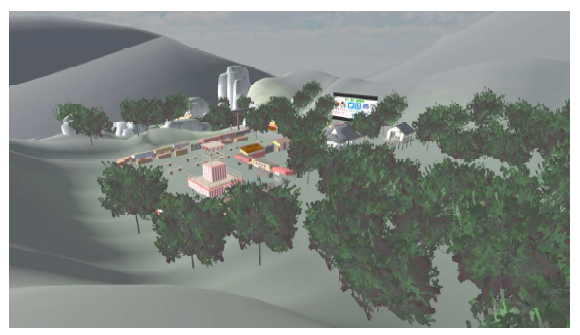でんまるClusterワールド
デスクトップアプリでもスマートフォンでも、VRゴーグルを持っていなくても入ることができます。もし興味があればぜひ遊びに行ってください。八卦炉も…？
Clusterのワールド 制作記はこちら。無料で読めますまた、この調布祭関連では、「第２回東方非想天則大会」と「第１回電。杯（幻走スカイドリフト大会）」をオンラインで行いました。オンラインでYouTube生実況をしながらの運営で、音声トラブルや相方の声が聞こえないとかいうくそやばトラブルを抱えまくりましたが、なんとか無事終わりました。筆者は大会Discord鯖やスプレッドシートの管理等を行っていました。また、電。杯の実況もしました。アーカイブが残っているのでぜひ（笑）
電々。通信📡です！調布祭二日目が始まり、引き続き賑わっております！
— 電々。通信（でんまる） (@uec_Touhou_) November 22, 2020
二日目は14時から非想天則大会を行います!大会Discord(https://t.co/lheASZIW1r)から参加できます！13時半からYoutubeライブ(https://t.co/R1qtwjnXn8)も行うのでお楽しみに！#でんまる#非想天則 pic.twitter.com/qsJqz2tQ6T
電々。通信📡です！調布祭三日目が始まっています！
— 電々。通信（でんまる） (@uec_Touhou_) November 23, 2020
三日目は15時から幻走スカイドリフト大会を行います!大会Discord(https://t.co/lheASZIW1r)から参加できます！このあと14時半からYoutubeライブ(https://t.co/KS9Wegc1oz)も行うのでお楽しみに！#でんまる#スカドリ pic.twitter.com/qsJqz2tQ6T pic.twitter.com/gPJAFU8Hnd
また、この年から部員が創作したものをまとめる「部誌」を作製しました。編集担当はもちろん、まにけんに所属していてノウハウのある筆者です（）。
でんまるでは、誰もが創作をしたくて集まったサークルではありません。なので、他の大学東方サークルさんのような「イラスト」「小説」「漫画」オンリーではなく、ゲームのことや旅のことなどを語れるようにする「評論」部門も作製しました。このおかげもあって、多くの部員に参加してもらい、ページ数を厚くすることができました！
なお、この時は内容をすでにClusterワールドで公開しているし、んまいいっしょの精神でBoothで無料頒布されています。ぜひページを訪れてみてね。また、この時はまだ「デジタル版」しか作製していませんでした（というかそれしか考えていなかった）ので、後日大変な目に遭うのだが、別の話…。
【企画２】サークル部誌
— 電々。通信（でんまる） (@uec_Touhou_) November 14, 2020
電々。通信の部員が制作した部誌「電々。新聞」１号を公開します！
Clusterワールドで展示されるとともに、Boothでも頒布されます！
部員が各々東方に関連した（？）内容を語る「評論」、古明地こいしをテーマに創った「創作」があります。ぜひご覧ください！#でんまる pic.twitter.com/QtW0wzqQH1
準公認と過去一で分裂しかけた話 でんまる２年目後半（準公認時代１：2020.10 ～ 2021.03）
学友会準公認になりませんか？
さて、調布祭は11月の話でしたが、ここですこしだけ時をさかのぼって9月～10月の「学友会準公認を獲得した話」でも……（というか、ここから本題にはいりますよね…？）
まず、非公認サークルと学友会準公認サークルの違いについて。非公認サークルはこの言葉の通りどこにも属していないサークルとなります。そのため、大学構内では基本的にフリーエリアで活動するか、図書館３階のグループ学習室で活動することになります。ただ、特に縛り等は存在しないため、好きなことをすることができます。いやほんと。（ただ、宗教とかやばいことをすると大学からしょっぴかれるので注意）。また、非公認でもお金さえ払えば調布祭にも参加できる（2023年度までの話。2024年度はどうかな？）ので、意外と制限がないように思われます。しかし、デメリットとしては、費用はすべて自分たちで持たないといけないこと、場所や物置の確保に奔走すること、そして新歓委員会主催の新歓イベントに参加できないことが挙げられます。筆者的には最後の新歓イベントに参加できないことが、サークルを継続して運営するにあたってとてもネックになると思います。その点、学友会準公認になると新歓イベントに参加することができるので、部員確保が容易になります。でんまるでは、後継者不在という深刻な問題を抱えていたので、学友会準公認は絶対にとろうという話になりました（実はもう１つ目的があるんですけど、それは大学公認の時に書きます。）
学友会準公認になるにあたってどのようなことをするのか、ですが、具体的には以下のことが挙げられます。
まず、ひとつめの「サークル公認・準公認願い」についてを読むですが、これは当たり前です。全ての基本となっています。また、学友会規則もしっかり読んだ方がいいでしょう。実は学友会準公認以上では、サークル会員のうち5人以上は学友会員でなくてはならないという決まりがあります（5人未満のサークルは例外的に全員入ればよいとされているが、議案提出時にはこの例外は適用されないはず）。毎年直前にわたわたしてなにもかも間に合わないということがあるので、気をつけましょう。
次に会計委員会室（サークル棟１階奥）に部員全員が凸するイベントですが、これは学生証と引き換えに学友会員の数を正式に把握するというイベントになっています。一応名簿の名義貸し防止の意味もあるみたいです。一部例外あり、と書いてありますが、筆者の頃はコロナの最中であったため、eduメールでの確認がヨシとされていました。しかし、今もそのシステムがあるかどうかは不明であるため、きちんと一度確認をしたほうがよさそうです。
学友会員が5人以上というのは先ほど説明したとおりです。もし足りない場合、また議案提出者が入っていなかった場合、執行委員会室（サークル棟１階手前）に振込用紙を取りに行きましょう。振り込んでから正会員になるまで１～２週間のタイムラグがあるので気をつけましょう。でんまるは代表の大福さんと副代表のあすなろわさびが入っていなかったという衝撃的な事実が直前まであったため、議案提出（仮）を筆者が、途中で大福さんに変えるという変則暴挙をしました（普通は許されないので気を付けてね）。
テンプレに必要事項を記入については、実は昨年度のUEC Advent calendar 2022で解説しているので、大学で使えるかもしれないレポート以外の文章の書き方を参照してください。んまあ、改めて、でんまるで書いた実際の議案書を下に貼っておきます（実はこの時の総会アーカイブが反映されていない）。
議案書の提出は執行委員会TwitterかHPに目安の時期になったら告知されるので、その時に出せるようにしましょう～。
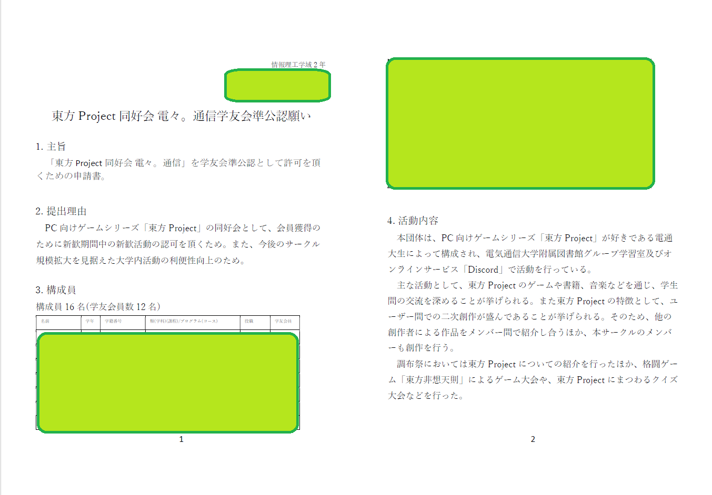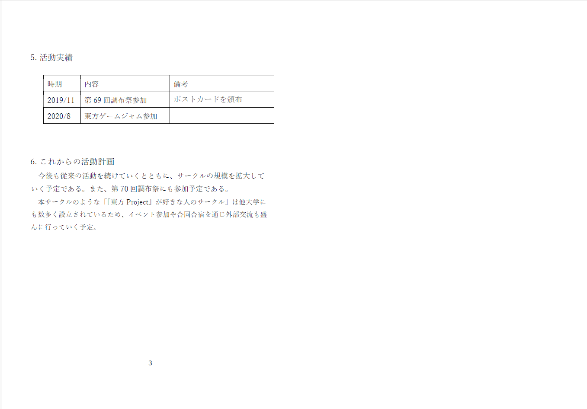
最後に、議案申請が受理されると、「公聴会」と呼ばれる事前質疑応答の回と、「学友総会」と呼ばれる、学友会員全員で議決（賛成・反対）をとる回に議案提出者は出席することになります。参加しましょう。
なお、みなさんが毎年鬱陶しいなと思っている「委任状」ですが、あれは学友会員に入っていないと名前を書いても無効です。また、現地に凸しようとしている人は委任状を書いてはいけません。学友総会では、現地の賛成・反対の票が最優先になる（多かったほうに委任状の票を全ツッパするため）ため、自分のサークルが…という時くらいは顔を出してみてはいかがでしょうか。
ちなみに、でんまるの回ではコロナだったこともあり、会員数の10分の1（総会成立要件）を満たさないかもしれませんでした。なので、自分たちで「書いて！書いて！」を言いながら回った記憶があります。（その回はたしか12%とかいうぎりぎりだった気がする）
きになるでんまるの結果は…？
【ご報告】
— 電々。通信（でんまる） (@uec_Touhou_) October 28, 2020
本日行われた学友会総会において、本サークル「東方Project同好会 電々。通信」は電気通信大学の学友会準公認サークルとして承認を頂きました🎉
今後は学友会公認を目指すとともに、より多様な活動を行っていくので、黄身時雨でも食べながら皆様ご声援のほどよろしくお願いします！！！ pic.twitter.com/CJgjlhnB5B
無事、学友会準公認の承認をいただきました！本当にありがとうございました！
でんまるの運営体制を変える？変えない？
調布祭も終わったし、準公認も取れたし、あとはゆっくり遊ぶだけ………、と思いきや、実は準公認にならんか？うんぬんの時から、でんまる独自の問題を抱えていました。でんまるでは、非公認時代では誰でも遊びにど～ぞ～というスタンスであったため、「部員」の定義を作っていなかったのです。しかし、部員という概念を作らないと議案書のメンバーが書けません。困った…。最終的には、苦肉の策ですが、部員という枠組みをつくって、遊びは誰でも、部の運営に関わるところは部員のみでというスタンスをとりました。この部分は他のサークルとちょっと違う部分なのかなと思います。こうなった理由として、当サークルは「コミュニティサークル」として発足した経緯があったため、ひろくふりーだむに誰でも参加してOKという思想があったからです。なお、今でもこのスタンスはびみょ～～～～～～～に受け継がれていますが、実際ほとんど他のサークルと変わらないような感じになっています。（OBが気軽に遊びに参加できるところだけは利点 かな…？）
また、でんまる史上最も分裂危機にあったのもこの時期でした。発足1年目は楽しくワイワイして遊んでいたのに、2年目になってからはさぞ「準公認」で決め事がおおいだのさぞ「技術Unityもくもく」だので楽しくなくなってしまった人が続々と離脱したからです。これも先ほどと同じように「コミュニティ」としての側面があったためでした。
これを解決するのに約7カ月間（9月～3月）、大福さんとあすなろわさびと筆者でバトルしまくりました。具体的には「コミュニティ」としての側面を強く要望するあすなろわさびサイドと、他のサークルの様子をみて少しは「サークル」としての運営方法を取り入れたほうがよいとする筆者サイドに分かれたって感じです。…これは今思い返しても胃が痛くなる作業でした……。どちらも意見をなかなか曲げないので、鞍点を探すのに大変苦労しました。（今思い返してみると、鞍点を見つけるように討論したり交渉したり議論したりが上手くなったのは、この行為があったからだと思う。）
結果、でんまるでは何を行われたかというと、「admin」と呼ばれる役員＋αで構成される、運営の話し合いを「他の遊びチャンネルから隠した状態」で行う場所を作った点、これだと中央政権になってしまうので、最終的には定例部会の最初のほうで部員みんなに「こんなの考えているんだけどどう？」とか「こんな意見あったからこうしといたよ」として議決をとるという点に変えました。個人的には「コミュニティ」という側面があったサークルだったからこんな複雑なことになりましたが、他のサークルであれば普通に部会で議論しちゃっていいと思います。あの時は時期が悪かったんや…（すべてを１から整備しないといけなかったので）。（ちなみにこの仕組みが銀行口座の件についても尾を引っ張っている可能性は否定できませんという話を後述します。後述多くてすみません。適切なタイミングがあるんや）。
んまあ、なんとか無事事態も収束して一安心になりました。
.........誰かの負担が増したけど。んまあ、こればっかりは仕方がないんですよ。B1後期からまにけんの役職やってるし、他のサークルにアクティブに兼部してたの筆者くらいでしたし、こういう運営チックなの好きだったし…、2021年1月には4月から「工研部長」になることが確定したし……。どんなことが起こったかというと、代表、副代表以外の仕事（会計、編集、渉外、書記）は全部ひととおりやってました(｀・ω・´)ｷﾘｯ。……倒れませんでしたのでご安心を。……ブラックでもないのでご安心を。
おまけ
ふらっと例大祭へ出かけてみたり。
忘れかけていたんですけど、3月には初めて「博麗神社例大祭」に参加しました。これに参加しませんか？？？という話題が急に部内ででて、賛成！ってことになりました。もちろん筆者も賛成だったのですが………編集大変ですね！？！？！
なぜかというと、本を製本するときには、規格というものがございます。解像度とか余白とかぬりたしとかCMYKとか。そんなんデジタル版では意識しなくてよかったので、きゅうううううううううううううきょ対応させることになりました。ただ、みなさんの手を煩わせるわけにはいかない（というのと原本が消失している人もいる）ので、手作業で全部規格あわせしました……。70pも……。具体的にはすべてのpdfページを手動でpsdに規格があうようにリサイズ・手直しする作業です。あれはもうしたくない……。
なんとか製本まにあって、無事出展することができました。他大学や東方を愛する人との交流はとても楽しかったです。（筆者はここでいまでも交流のある作家さんとお友達になれました）
— 電々。通信（でんまる） (@uec_Touhou_) March 21, 2021
設営完了しました！
— 電々。通信（でんまる） (@uec_Touhou_) March 21, 2021
北館入ってすぐ左、し08aにてお待ちしております～ pic.twitter.com/z8mrrqtxq9
急に差し込む学友会準公認以上の階級のTips
ちなみに学友会準公認以上になると、「４月」「７月」「１月？」に行われるサークル代表者会議に出席する義務が科されます。代表者は必ずでましょう。たしか３月末までに名簿を提出してね？だの、アンケートだしてねだの言われます。こちらは必ずやらないといけない内容となっていますので、言われた通りに頑張ってね！（急にぶん投げるスタイル。というかこれくらいしか説明することがない……。）
世代交代の年……（？） でんまる３年目（準公認時代２：2021.04 ～ 2022.03）
リベンジ！新歓！！
準公認になったので新歓イベントに参加できます！ということで、昨年12月から準備してきて、4月に対面＋オンラインという盤石な布陣で取り組もうとしました。たしかこの年は、講堂ステージ上で２分間くらいざっくばらんに説明し、その後A棟で質疑応答を受ける形式と、系統別説明会、教室説明会があったように記憶しています。
……いやあ、やってしまったんですよね。教室独自説明会、いらんやろ…？という意見が大多数（筆者は必要！って言ってたんですよ！）だったので取らなかったのですが、これが予想以上の大反響で対応しきれず急遽オンラインで開催するはめに……。嬉しい悲鳴です(´;ω;｀)。新歓イベントに参加する時は、どんなに人数すくなくても教室独自説明会はやったほうがいいですよ！（１敗）。
その他に、あすなろわさびが学食TV（生協食堂にあるテレビに流れるCMみたいなもの）に動画をつくってくれて流してくれたりもしました。その結果もあって、20生21生合わせて10人以上入部してくれました！！！感謝…！
新歓予定です！
— 電々。通信（でんまる） (@uec_Touhou_) April 6, 2021
✨✨✨
4/7 18時～ 新歓部会(1)
サークルDiscordにて
4/10 15時～ サークル回り
希望者は発表終了後A棟で説明会(新2年のみ)
4/11 12時～ 系統別説明会
B201でトップバッター！
4/14 18時～ 新歓部会(2)
サークルDiscordにて
✨✨✨
新歓部会参加希望者はDMへ！#uec21#uec新歓2021
本日の新歓予定はこちら！！！
— 電々。通信（でんまる） (@uec_Touhou_) April 11, 2021
・系統別説明会
B201で12時ちょうどより発表します！
・Discord相談会
急遽実施します！Zoomの代わりにサークルDiscordで15時以降個別説明会をします！！！もし系統別説明会の参加か難しいという方、DMの方にお声かけください！！#でんまる#uec21#uec新歓2021 pic.twitter.com/1vS0kCVi7V
本サークルの活動紹介動画です！ぜひご覧ください！！！
— 電々。通信（でんまる） (@uec_Touhou_) April 15, 2021
体験入部は随時受け付けているので気になった方はお気軽にDM📨を！#でんまる pic.twitter.com/5DXTpfnIeY
本サークルの宣伝動画を学食テレビにて4/16~5/15の期間で放映しています📡
— 電々。通信（でんまる） (@uec_Touhou_) April 21, 2021
2枚目の通り、体験入部は常時受け付け中なので気になる方は是非是非！！！#でんまる pic.twitter.com/9JElyDN8PD
通常部会もまだまだオンラインで……。
このころ、大学では対面授業がぼちぼち一部始まってきたが、サークルの対面活動はまだまだ難しい状態が続いていました。なので、昨年度に引き続きクイズやオンラインゲームなどを行っていました。特に、新入生がはいってきた最初のうちは、交流がしやすいように一部顔出しをしてみたり、会話メインにしてみたりいろいろ試行錯誤してみました。
せっかくのGWということで、この先の対面活動がしばらく難しそうということもあり顔合わせ会を行いました！
— 電々。通信（でんまる） (@uec_Touhou_) May 4, 2021
会の中では「東方スペルカード再翻訳」という企画を行いました！！！2枚目の元になったスペルカードが何か、皆さん分かりますか？#でんまる pic.twitter.com/hmFuuqUzUx
規約作り……！（学友会公認は任意、大学公認はマスト）
さて、この時期（６月ごろ）運営では何をやっていたのかというと、サークル会則（規約）作りです。これは、将来的に学友会公認になって援助金を受け取るとなったときにゆうちょ銀行の口座が必要で、これの開設に規約が必要だからです。また、将来大学公認を目指すとなったときにも提出書類として必要です。会則の作り方としては様々あるのですが、個人的には「ゆうちょ銀行の団体（人格なき社団）に必要な規約」をベースに「工学研究部のサークル規約・部費納入規則（筆者が一部手直ししています）」、「MMAの会則」を参考にしたほうがよさそうです。
2020年8月あたりからゆうちょ銀行の口座開設がだいぶ厳しくなっているので、この規約づくりは丁寧にしっかり書いたほうがよさそうです。（直接民主制がなされているほうがいいよね……！）ゆうちょ銀行の団体に必要な規約の書類は通常は窓口で貰う必要があるのですが、こちらも昨年度のUEC
Advent calendar 2022で「サークル規約の書き方」として軽くまとめていますのでぜひ（もしかしたら拡大解釈できるように余地を残すというのをやめたほうがいいかもしれない。）
代表がかわります①
規約が完成した９月ごろ、でんまる内では大きな出来事がありました。代表の大福さんが卒論で忙しくなったので引退（任期：２年９カ月）・２代目代表としてあすなろわさびが就任しました。（まあ規約作製の段階で機能不全になっていたんですけどね）発足当時から代表をつとめていたので少し感慨深いものがありました。んまあ、まだ完全にいなくなったわけではないので、これからもいじり倒すのですが（おい）
これと同時に、規約に従って副代表を、その他役職として部誌担当を決めました。（ただ、部誌２号については、９月までに作らないといけなかったので事実上筆者が編集していました。）初めての21生による役職、初めての初期メンバーでない人の役職、期待と不安が入り混じる役職交替になりました。
本日の役員選挙にて、
— 電々。通信（でんまる） (@uec_Touhou_) September 1, 2021
・副代表
たむ(1年次)、On(1年次)
・部誌編集
ゆずれもん(1年次)
を新たに任命いたしました。皆様、今後もよろしくお願いいたします。#でんまる
（さて、この時点でAdvent calendar 前日の14時です。まずいです。リセミ（リーダーシップセミナー）？準公認以上の夏休みの強制イベントなんで、代表者１名たてて行ってきてください。）
部誌 → 例大祭 → 調布祭の黄金ルート
この年から、部誌作製（９月）→博麗神社例大祭参加（10月）→調布祭参加（11月）という黄金ルートが確立されました。どちらでも部誌は（一応）必要ですからね！
博麗神社秋季例大祭は、いわずもがな楽しかったです（小学生並みの感想しかでなくてすみません。サークル参加２回目なので、慣れてきました。同人誌即売会でのサークル参加の方法とか知りたかったら、Twitterに要望ください。考えます）
調布祭では今年もオンラインでしたので「第３回東方非想天則大会」と「第２回電。杯」を引き続き開催しました。電。杯については第１回もそうだったんですけど「海外勢７割」とかいう参加構成でしたので、英語対応がくっそ大変でした（苦笑）。でも、無事終えられてよかったです。
設営完了しました！本日はよろしくお願いします！#でんまる pic.twitter.com/9twABJHoQX
— 電々。通信（でんまる） (@uec_Touhou_) October 24, 2021
本日は第三回東方非想天則大会へのご参加ありがとうございました！
— 電々。通信（でんまる） (@uec_Touhou_) November 20, 2021
優勝はけーまさんでした！一昨年、去年に引き続きの三連覇となります！
来年の開催の際は皆様改めてよろしくお願いします！https://t.co/PIWu6fvLqY#でんまる
本日は幻走SkyDrift第２回電。杯へのご参加ありがとうございました！
— 電々。通信（でんまる） (@uec_Touhou_) November 21, 2021
優勝はMagicaKeさんでした！
来年の開催の際は皆様改めてよろしくお願いします！#でんまるhttps://t.co/mS3G8bIaqj
ゆうちょ銀行口座開設の話と、失敗した話。（学友会公認・大学公認）
10月には、できあがった規約をひっさげて、ゆうちょ銀行の口座を開設しようとしました。最初が肝心で、最初失敗すると２回目以降も失敗しやすいのですが……
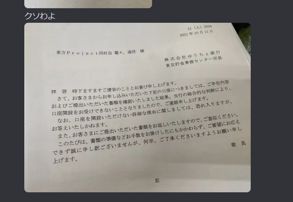失敗しました！！！！チキショーーーーー！
………。悲しいかな、というところなんですけど、幸い後日UFJ銀行の口座開設が（なぜか）できたのでまあ耐えたかなといったところです。
工学研究部さんのほうでも銀行口座の代表変更とかやったので、口座関連についてひととおり解説します。まず、準備は入念に！！！学友会公認まで少なくとも待つ！！！ほうがよいです。前者は公的機関なので少しでも不備やミスがあるとまずはじかれます（不正な金の流れを防止するため。ヤクザだと思われてしまう）。また、後者は団体としての歴史が重要で、ふわふわした状態で申請してしまったのがいけないのかなと思っています。みなさんも口座開設するときはしっかり準備をしましょう！！！！！！！！！！！！！！！！！！！！！！！！！
ゆうちょ銀行の口座が必要な理由は、学友会からのサークル援助金の振り込みが原則ゆうちょ銀行口座のみだからです。これは公共機関だとよくある話でこればっかしはどうしようもないです（ただ、理由をしっかり言えば会計委員会は対応してくれます。そんなにゆうちょ銀行にこだわりすぎない・急ぎ過ぎなくてもいいと思います。）
口座開設は基本的には団体（人格なき社団）名義の口座を開設されるお客さまへ
- ゆうちょ銀行や、個人ブログの任意団体の口座開設規約など必要書類を参考にしましょう。特に個人ブログのほうは、総会議事録や収支報告書の形式の例示があって結構参考になります。
筆者からも少し解説します。口座開設に必要なものは◎、口座管理者の変更（名義人変更）に必要な情報は□を先頭につけて解説します。
こちらは両方必須です。最新版の必要な情報が詰まっていますので、「人格なき団体の口座の新規開設をしたいのですが…」や「人格なき団体の口座の管理者の変更をしたいのですが…」と言って説明を受けましょう。特に□名義人変更の方は現管理者の印鑑も必要になってきます。もらった書類に押せば現管理者が立ち合わなくてもいいので、ぜひやりましょう。
先ほど作っていましたね（約２段落前くらいに）。作りましょう。
全部紙に印刷したら、紙の余白に「この規約の記載内容について事実と相違ないことを証明します /n （代表者の住所） /n 会長（部長・代表） 氏名
印」を書きます。ただ、これは現地で書いてもいいので、わからなかったら白紙で持っていきましょう。
活動実績がわかる資料を持っていくそうです。例えば、活動報告書（～～年 これこれ、というリスト）、総会招集通知（んなもんねーよ）、会合の案内（んなｍ（（、事業成果物（サークルの部誌、コンクールや即売会の実績、賞状とか挙げられる）、Webサイトの活動履歴等が挙げられるそうです。２個以上選択して持っていけるといいですね。紙にだしたりして提出しましょう。なお、部誌とかは回収されてしまうので、きちんと回収されてもいいように予備を持っていきましょう。
これは、実体のある団体であることを明示する必要があります。実は大学公認 or 学友会準公認 or
学友会公認になるとつくることが義務付けられているので持っていると思いますが、項目が足りない場合があります。ゆうちょのテンプレートでは「役職」「氏名」「住所」「電話番号」となっていますが、学生団体の場合「役職」「学籍番号」「氏名」「電話番号」「（役員のみ）メールアドレス」で大丈夫だと思います。
マストです。形式テンプレをみて書きましょう。特に本名とハンドルネームとかそういうのに気をつけましょう。また、どんなに小さいことでも多数決がとられているか、とかね。議決までの過程が健全であるかとかを見られます。なお、設立から間もない場合「設立総会議事録」というものを用意するそうです。
ただここでワンポイントアドバイスなんですけど、総会議事録は2020年8月から必須になったのでそれより前にある団体は「部会＝総会」としているケースがあります。その時は全部提出しないといけないので、一般的な総会と部会を分けたほうが吉かもしれません。
また、□名義人変更の場合は、代表（かその役職が変わった）という証拠議事録が特に必要です。忘れないようにしましょう。
実はこれ更新でも必要になったとかなってないとか議論がわかれていますが、ふつうは毎年つくるものなので、この際に作っておきましょう。テンプレは参考にしている個人ブログを見てね。（これくっそめんどいけど、これがないとお金が健全ですよと証明できません）
顔写真入りの本人確認書類１点（マイナンバーカード、運転免許証等）が必要です。ない場合は窓口で相談してください。なお、学生証は不可です。もし、申込者と名義人が異なる場合、両方の本人確認書類が必要です。
持っていきましょう。シャチハタ不可。□名義人変更の場合は、現管理者の印鑑も必要です。
名義人変更の場合、通帳は必須です。キャッシュカードも念のため持っていきましょう。
うーん、めんどい。でんまるの場合、正しく収支報告書が書けていなかった、規約に不備があった、名簿に誤字があったとかではじかれたと思います。また、adminと部会にわけたことで、直接民主制でないと読まれた可能性も否定はできません。結局原因はわからずじまい。ぜひ、みなさんはしっかり準備してください。
学友会公認願だしそびれました（）
さーてこんなことをやっているとこういうことが起きるわけで…。
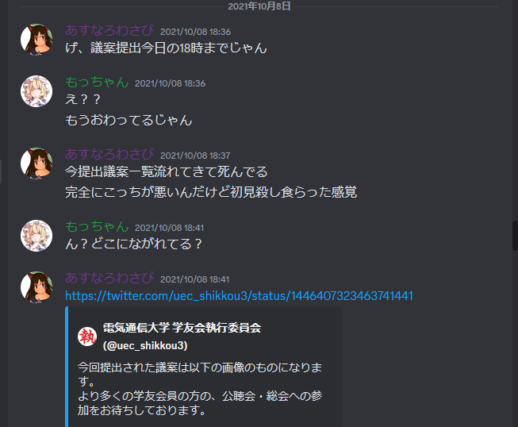……あの、、、一日３回くらいBot通知ながしてたアカウントで急にそんな連絡しないでいただけます…？（そして例年あったはずのHPによる議案募集のお知らせがなかった…）……。普通はそんなことにならないはずなのですが、時期が近づいたらきちんと確認するようにしましょう。
待ちに待った対面部会の復活！
時がすぎ12月……、いよいよ待ちに待った日がやってきました。それは、対面部会の復活です！！まだでんまるは学友会準公認の立場なので大学の教室を借りることはできませんが、調布市には幸い「調布市民会館たづくり」という便利な施設があります。そこの会議室を１部屋かりて行われました！！！！いやあ、感慨深い！そして声と顔が一致しないｗｗｗｗｗｗｗ。
12月ということもあり、ビンゴ＋景品交換大会を行いました。これは毎年行おうと（勝手にムーブを起こして）企画していて、今年も行うそうです（勝手に）。
水曜日に対面部会を開催しました！1年半以上ぶりの対面活動で新鮮な活動となりました！！！#でんまる pic.twitter.com/rFOru7Tznt
— 電々。通信（でんまる） (@uec_Touhou_) December 18, 2021
これはビンゴ大会を主催したものの最後までビンゴしなかった会計担当#でんまる pic.twitter.com/zRjT2RDvvi
— 電々。通信（でんまる） (@uec_Touhou_) December 18, 2021
代表がかわります②
時を同じくして12月ごろ、でんまる内では大きな出来事がありました（デジャヴ）。規約の役員交替に乗っ取り、２代目代表あすなろわさびが引退（任期：３カ月！？！？！？）、３代目代表としてOnくんが、そして新体制となりました。ついに初期メンバーではない21生による運営に変わりました！ただ、残してしまった学友会公認やその他の引き継ぐのがめんどい業務については引き続き行うことにしました（え？）（ほんと）。
・代表 On @rngr500
— 電々。通信（でんまる） (@uec_Touhou_) January 9, 2022
・副代表 たむ @Tumn0436
・会計 ずはずは @zuhazuha7676
・書記 たむ、たと @tato_uec
・渉外 Maro @21_4maro
・編集 ゆずれもん @yuzulemon0509
あんなこんなで、３年目も深いことばっかりでしたね。もちろん日頃の活動やボウリング、猿橋への旅など様々なことを行いましたよ（これを全部書いていると、皆さんを１日無駄に浪費させてしまうので）
また、来年度から筆者は学域４年になるので、役職は全部解放されています。（ほんとかなあ？）
ついに学友会公認へ！ でんまる４年目①（準公認時代３：2022.04 ～ 2022.05）
４年目です。この年は大きなことが起こりすぎているので、３部作に分けて書きます。また、新歓をやったとか……もういいよね。はい。この年も行い、10人以上入ってくれました。部員33人です。準公認にしてはおおすぎぃ！
でんまるは本日4/13(水)の18:00から、調布市文化会館たづくりにて新歓対面部会を行います！
— 電々。通信（でんまる） (@uec_Touhou_) April 12, 2022
入退室自由、また入部希望者は参加費無料なので、でんまるに少しでも興味のある方はぜひご参加ください！
詳しくはサークルDiscordをご確認ください。#uec新歓2022 #uec22 #でんまる pic.twitter.com/ot6kNvZdPY
学友会公認を獲得した話
さて、この４月～５月というのは、でんまるが学友会公認を獲得した時期となります。なので「学友会公認を獲得した話でも……」（ここから本題にはいります２）
まず、学友会準公認と学友会公認の違いについて。学友会準公認のメリットについては「学友会準公認を獲得した話」で伝えましたね。しかし、デメリットというか制度上しょうがないことがあります。それは、学友会準公認になってから１年～２年を目安に学友会公認になるか非公認に下がるかをしなくてはならないことです。学友会公認になるメリットとして、学友会援助金（以下、サークル援助金という）が貰えるところです。これは詳しいことは割愛する（というか、５年目の６月に書くのでもう少しまってくれ～）のですが、一定程度活動で生じた経費が返ってくることになります。これはおおきい！！！！とるしかありませんね！！！ということで、とりましょう。
学友会公認になるにあたってどのようなことをするのか、ですが、具体的には以下のことが挙げられます。
では違うところはどこ？というところですが、会員の内訳が「学友会員が５人以上」かつ「学域１年生がいること」となっています。これが少し厄介で、前期に議案を通そうとすると、4/13前後くらいには決着をつけなければならないということです。厳しい！！！。例年は公聴会までに議案修正をすればなんとかなるらしいので、議案提出時に執行委員会に言ってみましょう。それ以外は同じです。
ちなみにでんまるはこんな感じ。
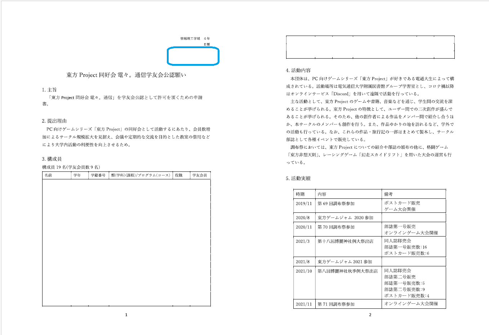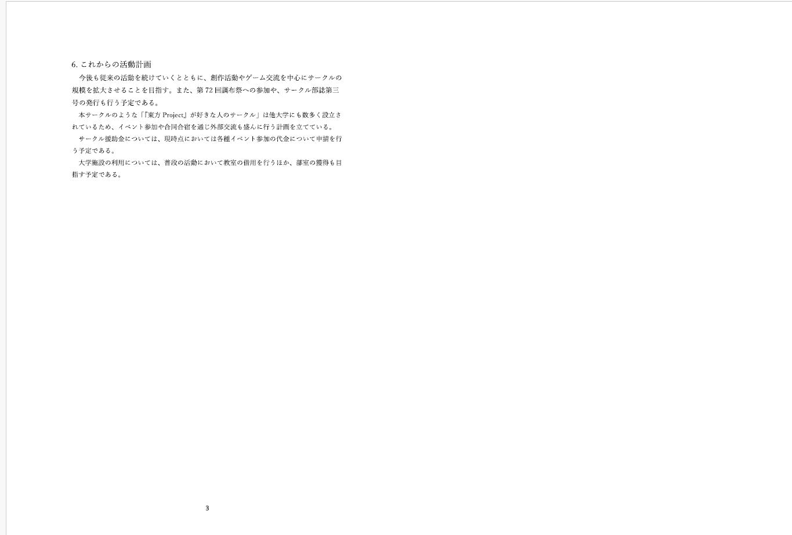
気になるでんまるの結果は……？
第66回学友会総会において、弊サークル「東方Project同好会 電々。通信」の学友会公認願いが承認されました！
— 電々。通信（でんまる） (@uec_Touhou_) May 20, 2022
本日から電通大の学友会公認サークルとなります！これからもでんまるをよろしくお願いします！！#でんまる
無事、学友会公認の承認を頂きました！本当にありがとうございました！
※ ちなみにこの後、大学公認の話になりますが、一部学友会準公認・学友会公認でもやらないといけない作業があるので、学友会公認どまりでいいサークルも最後までみてね。
最難関、大学公認を獲得できるか？ でんまる４年目②（学友会公認時代：2022.06 ～ 2022.12）
さて、学友会公認になったからって、遊びとか運営方法とかは変わりません。いつもどおり「たづくり」で部屋を借りてクイズしたり、お絵描きしたり、部誌の説明したり……。
昨日でんまるはたづくりにて対面部会を行いました。
— 電々。通信（でんまる） (@uec_Touhou_) July 7, 2022
多くの人が集まってクイズやお絵かき講座などを楽しんでいました！
今月から月イチで対面部会をやっていく予定です！#でんまる pic.twitter.com/VRujcIFESm
いつもの黄金ルート
時系列はぐちゃぐちゃになっちゃいますが、先に博麗神社例大祭と調布祭を片づけます。
この年も博麗神社例大祭に参加しました。今回も様々な方と交流することができました。そして、なんと！都立大の東方サークルの方が挨拶にきてくださいました！どうやら新規メンバーで再起動したらしく、いろいろ交流したいということでした。なので、調布祭を案内しました。
電々。通信、設営完了しました！
— 電々。通信（でんまる） (@uec_Touhou_) October 23, 2022
と18bでお待ちしております！
#でんまる #例大祭 pic.twitter.com/Gmkh24MeZU
調布祭でははじめて、「アイドルマスター研究会【D@NPEN】」、「バーチャルライブ研究会（VLL）」と３団体で行う「ニコニコ御三家調会議」を企画しました！これは、普段調布祭に参加しないアイマス研と、めちゃくちゃ参加しているVLLと合同で企画をやればもっと面白いことができるんじゃないか？という発想（まあ、3万5000円（当時）を分割できるメリットもあった）で生まれた企画となります。合同でポストカードをつくったり、落書き壁をつくったりと楽しい企画をすることができ、来てくださった人を楽しませることができました！
今日から3日間、調布祭にてニコニコ御三家調会議を出店します！！
— 電々。通信（でんまる） (@uec_Touhou_) November 18, 2022
ボカロのVLL、アイマスのD@NPENと合同出店となります！場所は旧C201、ぜひ来てね！
ちなみに画像2枚目は今回頒布するポスカと、3年前のでんまるのポスカです。懐かしい！#でんまる pic.twitter.com/tsF821Lcgq
調布祭3日間の落書きかべです。
— 電々。通信（でんまる） (@uec_Touhou_) November 20, 2022
描いてくださったみなさん、ありがとうございました！
#でんまる pic.twitter.com/T7eyW8dHz3
また、でんまるでは部誌の頒布と「第４回東方非想天則大会」、「第１回東方花映塚大会」を行いました！３年ぶりのリアル会場での大会となり、規模はだいぶ縮小されましたが、それでも都立大の方々や外部の方々がいらっしゃってとてもよかったです。
第4回東方非想天則大会、けーま選手の優勝です！！これでけーま選手は4連覇です！！ pic.twitter.com/W7AsLLmj87
— 電々。通信（でんまる） (@uec_Touhou_) November 20, 2022
調布祭にて電々。通信@uec_Touhou_さんにお邪魔しました！
— 東方都立璋 (@toho_metro) November 19, 2022
花映塚では無惨な姿を晒してしまい申し訳ございませんでした
精進します 、、 pic.twitter.com/K7rrXX0Kjc
また、年末恒例のビンゴ大会では、会計担当がビりになるジンクスが生まれようとしています。なぜ？
本日、今年最後の対面部会を行いました！
— 電々。通信（でんまる） (@uec_Touhou_) December 14, 2022
毎年恒例になりつつあるビンゴ大会、会計担当がビリになるジンクスがあるようです
いやそれにしても65/75でようやくとは… pic.twitter.com/0dPbO1o11G
大学公認にチャレンジする話
【注意】ここからはしばらく「でんまるが大学公認へ申請した流れ」について書きます。なお、はじめにお断りをいれますが、かなりぼかして記述します。というのも、その時の風水や運、交渉のうまさや臨機応変さ、忍耐強さ、理不尽だと思うことも飲み込むことなど、様々な要素が絡んでくるためです。また、あまり詳しく書くと、でんまる本体や担当者などにも危害が及ぶ可能性というのもあります。ちょっと焦点が定まっていない感じになりますが、そこらへんご容赦頂ければと思います。（関係各所：見ても見てないフリをしてください
orz）
さて、でんまるが6月あたりから大学公認を目指すわけですが、大学公認になるメリットとデメリットについてお伝えします。ただ、その前に１点だけ。大学公認サークルは学友会公認を兼ねます。（というか大学公認サークルは学友会公認であることが必須条件）。なので、大学公認になっても学友会公認で必要な作業はなんら変わらないということです。（忘れがちだから覚えといてね）
大学公認になるメリットとして、「大学のHPに団体の名前が掲載される」「団体名に『電気通信大学』『UEC』をつけられる」「学園活動後援会などから援助金をうけられる」「大学の教室が借りられる」「部室や倉庫が借りられる」というものがあります。
１つ目「大学のHPに団体の名前が掲載される」については、学友会HPには学友会準公認から名前が掲載されるのですが、やはり大学のHPに名前がのるのはとてもよいなと感じています。
２つ目「団体名に『電気通信大学』『UEC』をつけられる」とありますが、ここはちょっと補足が必要です。非公認・学友会準公認・学友会公認サークルは、会計に必要な書類を除いて電気通信大学の名前を使うことを禁止されています。これは、大学が認知していない、認めていないところからによる電通大の名前にキズがついたり予期せぬトラブルが起こることを防ぐという目的があります（その他もあるけど）。ただ、大学の名前を冠せると、どこの大学のサークルなのか一目でわかるからよいですよね（ただ、でんまるでは特に使用していないというのが現状となります）
３つ目「学園活動後援会などから援助金をうけられる」ですが、実は学園活動後援会から年に１回程度（書類を書いて申請すれば）援助金を貰えるというものがあります。こちらは「学園活動後援会」の加入率にもよりますが、80%以上の加入で最大10万円貰えるという、サークルにとっては咽から手が出るほどのありがたい話です。学園活動後援会、ありがとうございます……！
４つ目「大学の教室が借りられる」ですが、でんまるはこちらがメインの目的でした。毎回たづくりにいくのはちょっと遠いし、費用もサークル援助金があるとはいえ他のことにもお金を使うとなるとちょっと厳しい。大学構内でできればとてもよいんですけど、でんまる１年目のような少人数でもないし…（当時部員33人）。ということで、学友会準公認時代から目指していたゴール地点はここになります。
５つ目「部室や倉庫が借りられる」とありますが、厳密にはあいていればの話です。2023年12月現在部室は空きがありませんし、倉庫も1つ空きがあったかな？と言った感じです。まあ、でんまるもゆくゆくは部室ほしいよねって話しています。
では、デメリットはと申しますと「電通大の看板を背負って活動することになるから、行動・規律を正さなければならない」「提出書類がおおい」ということです。前者は大学の（準）組織という形になるので、ある程度はルールを守る必要があります。酒乱をするとか、過剰に権利を主張するとかやっても知らないよ？。また、後者は３月に更新届、５月に名簿等を提出しなければなりません。これはしょうがないね。
ちなみにですが、大学公認になれるチャンスは一度きりであると考えたほうがよいです。なぜかというと、一度大学の事務・審査で「否決」になってしまうと、その後再申請しても「否決」になる可能性がとても高いからだそうです。なので、もし課外・厚生係の方や学生課の方が親切に対応してくださったら、ありがたくのっかるようにしましょう。本当に失敗は許されないので。
では、大学公認になるにあたってどのようなことをするのか、ですが、まずは「課外・厚生係窓口」に出向いてください。すべてはここから始まります。ここでいろいろ必要な説明を受けます。でんまるの時は以下の感じでした（概ね変化してないはずですけどね）
提出書類２「団体規約」については、すでに説明済みなので省略します（え？見逃した？見返してください……）
提出書類３「団体名簿」についても、書くだけなので割愛します。
顧問を見つけるプロセスですが、ここがもしかしたら最も大変かもしれません。顧問になっていただける条件は「電気通信大学の常任教授または准教授」です。まあ早い話、研究室をもっている先生が該当するということです。んで、ベターなのは他のサークルと被っていないことということですが、こちらはマスト事項ではないので無視しても大丈夫です。
顧問の先生をみつけるためには、まずなってくれそうな先生を探す必要があります。顧問の先生は運動部では結構必要かもしれませんが、文化部の場合は更新届を提出する際にハンコを頂くだけです。ただし、万が一なにか起こった場合は顧問の責任にもなります。なので、きちんとアポイントメントをとり、サークルとしての健全性を説明し、ハンコをすぐに貰えそうな（優しそうな）、協力してくれる先生を探す必要があります。最終的には団体設立届にハンコをいただくことで就任という形になるので、できればこれまでに他の仕事をすべて終わらせておくのがベターでしょう。
でんまるでは、あすなろわさびの研究室の先生が顧問になってくださいました。話をとおしてくれて、そして協力してくださってありがとうございます！そしていまでもサポートしていただいているので感謝感謝です……！
では、最後は提出書類１「団体設立届」の記入です。こちらがとてもデリケート。活動の目的100文字程度と、主な活動内容200文字程度を記入するのですが、団体の説明・活動の現状・活動内容・なぜ大学公認を希望するのか（サークル部室・倉庫・教室ほしい）というのをすべて盛り込まなければなりません。幸い電気通信大学には「UECポケモンだいすきクラブ」や「非電源ゲーム同好会」などの数多いゲームサークルが大学公認を獲得しているため、書き方のノウハウや添削はしてくださります。いろいろ面談しながら詰めていきましょう。
さて、この団体設立届、よく詰まりやすいポイントとしては「安全性が担保されているか」「大学のポリシーに反することをしていないか」「著作権に配慮しているか」が挙げられます。安全性についてはいわずもがなですね。たとえば「サバゲ―愛好会」はそこらへん苦戦したみたいです。「大学のポリシーに反していないか」は宗教チックではないか、とか〇ス〇レ・〇装・〇〇B〇〇〇（本当にいまデリケートな話題なので伏字で）でもめないかとかが挙げられます。そして、東方Projectサークルに最も強く影響を与えているのが「著作権に配慮しているか」です。大学はかなり著作権に厳しいです。その理由は不明ですが、万が一のことが起こったときに、大学が認めた団体ということで大学の著作権に対する認識について追求されるからではないかと推測されます。
いわずもがな東方ProjectはZUNさんが手がけるゲームで、著作権はすべて上海アリス幻樂団の持ち物です。こちらについてはガイドラインが定義されているため、こちらについてを説明したり、さまざまなことをして解決しました。うん、さまざま。ひとこと言えるとしたら、んまあ、活動内容に明記したこと以外はやっちゃだめってわけじゃないよね？（それ言われたら弾力のある活動ができません）ってことです。（んーほらっ、ねっ、23年度の調布祭！例の団体、ね？）（ほら、創作活動とかって個人でやるじゃん？ね？？？ね？？？？？？（察して））
んーまあ、この設立願についてはどのサークルも公開していたりしないんじゃないかなと思います。んまあ、でも一応念のため、でんまるの「活動の目的」と「主な活動内容」だけ参考になるかとおもい、掲示します。
きづけは12月……。６カ月に及ぶ長き戦いの末提出した筆者ふくめたでんまる……。その結果は………？
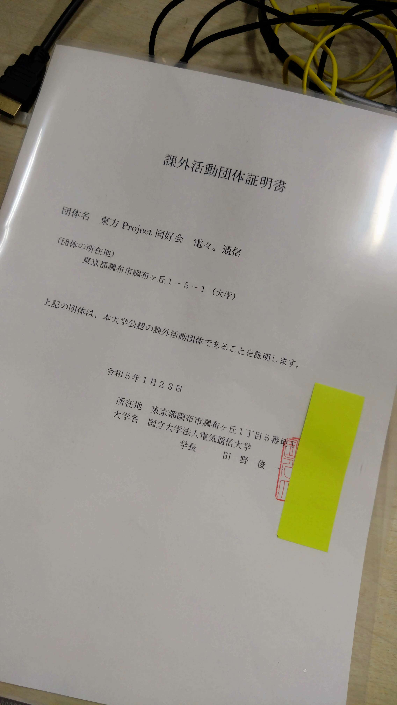
※ 証明書は別途申請するともらえます
サークル設立から３年と９カ月...
— 電々。通信（でんまる） (@uec_Touhou_) December 26, 2022
ついに本日付で東方Project同好会 電々。通信は大学公認サークルとなりました！！
これからも引き続きゆっくり活動していきます！よろしくお願いします！ pic.twitter.com/vuiJn09jUm
祝！大学公認化！！！！！！！
……ついに！ついに！！やりました！！！大学公認！！！！！さすがに筆者は嬉し泣きしました。しょうがないじゃん！！！3年9カ月だよ？？やったんだよ？？？？？まじで！？（ツイートでもツリー構造でたくさん思いを吐露しています）
…本当にやり遂げたんだな、という気持ちでいっぱいで、恥ずかしながら嬉し泣きしてしまいました(/ω＼*)
— もっちゃん@桜餅 (@sakuramochi0708) December 26, 2022
自分は代表にも副代表にもなったことはありませんが、少しでも貢献できてたらいいな、と思います。
これからも #でんまる をよろしく！！
ーーーー
（以下は、でんまる鯖に投稿した文章） https://t.co/m4w4hmmP1E pic.twitter.com/7NGdAYhY64
ほんとうに部員の方々や携わってくださった方、課外担当の方のおかげです。本当にありがとうございました。
……んん、いや、正直ここで書きますよ。実際は辛かったですよ。社会や大人のあれこれも学びましたし、交渉術も学びました。きっついモーニングコールもうけましたし（苦笑）。いまでは良い経験だったなと思えますが、だって、学域4年の12月っておい、卒論1カ月前とかだぞ！？！？！？……んまあ、でも結果ほんとに大学公認になって本当によかった。
念願の教室使用……！ でんまる４年目③（大学公認時代１：2023.01 ～ 2023.03）
役員が増えました
さて、大学公認になってもやることは「遊ぶ」、これ一本です。んでもまずは年がかわったので役員交替ですね。（選挙は11月末でしたが、変わり目は1月）
今日の総会で次代の役員が決定しました！
— 電々。通信（でんまる） (@uec_Touhou_) November 30, 2022
代表 : On @rngr500
副代表 : たむ @tumn0436、名無しの電子部品
会計 : ずはずは @zuhazuha7676、水素 @Hydrogen_D1
書記 : たと @tato_uec、へる @Welcome_madhell
渉外 : Maro @21_4maro
編集 : ゆずれもん @yuzulemon0509
来年度もよろしくお願いします!
こまごまとしたこと
あっ、そいえば大学公認の勢いで２回目のゆうちょチャレンジしたのにダメでした。大学の証明書も持って行ったのに……なんで？？？？？
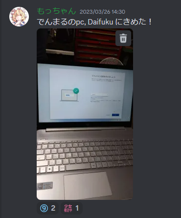後援会援助金、この年度は「たまたま」１月にあったのですが、きちんと申請をし、部所有のPCをかうことができました！やったね！！！
また、ロッカーは「たまたま」工研のロッカーの隣があいているのを見つけたので申請したら通りました。やったね！！！！！（画像のゴルフクラブは前の持ち主の置き土産でした）
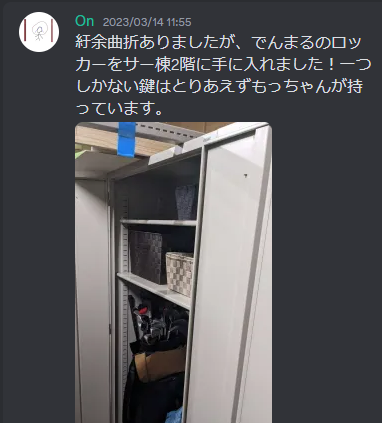大学公認で必要な提出資料の作成
では、年度替わりですね、ということなんですけど、そうは問屋がおろさないのがあれなところ。
まず、大学公認として必要なのは「課外活動継続申請書」、「役員交代届」、「団体名簿」、「活動予定報告書・要望書」です。前者２つは（どちらか）顧問のハンコが必要だった気がします。これを１月か３月まで、後者２つは翌年５月時点のものを提出するといった形です。筆者は知らないのですが、最近サークル活動Teamsができたらしく、そこでやりとりをしているらしいです。知らなかった……。
また、学友会公認（大学公認は学友会公認でもあるので気をつけること！）では、３月末にこちらも「何枚かの資料」と「３月時点の団体名簿」の提出が必要となります。忘れないでね…！
あとは4月あたまに諏訪にいった人たちがいるのもこのころだったような（筆者は行っていません）
ついに本当に世代交代……。 でんまる５年目（大学公認時代２：2023.04 ～）
……ん、もうちょっと世代交代まってね。
新歓と「はじめての教室部会！」
この年も新歓がありました。いろいろ催しものをやったり、イベントなんかを企画しましたが、なんといっても、新歓も兼ねた対面部会として「初めて大学の教室で行えたこと」がもっとも大きなイベントでした！！！23生には「なんのこと？」とかいってぽかーん( ﾟдﾟ)とさせてしまいましたが、教室で遊べたというのはとても嬉しかった……だって、たづくりまでの移動時間考慮しなくていいんだもん（そこ？）。結果として10人また入ってくれてとても嬉しかったです！！計35人！（あれ、やめた人もいるので仕方がないね）
新歓＆大学教室初の部会、大盛況です！！！
— 電々。通信（でんまる） (@uec_Touhou_) April 12, 2023
#でんまる #uec23 pic.twitter.com/YNyt93zhrF
うーーん、面倒くさい！会計報告！！！！（学友会準公認・学友会公認・大学公認）
さあさあ、遊びもさることながら、６月というのは経理上大変な作業が待ち受けています。これはサークル援助金をかけて行う「会計報告」です。
ここでようやく説明することになって申し訳ありませんでした。まず「サークル援助金」は実際なにものなんだよ、ということですが、これは学友会の予算のうちの一部がサークルへの援助金として予算計上されているものです。援助金として申請できるものとして、毎年「令和〇年度 サークル援助金許可・不許可項目」として配布されるので、こちらを確認してください。具体的には「サークルで使用する物品等」が対象です。
R3年度の例を参照しながら説明しますので、みなさんは必ず最新年度のものを確認してください。
前提：「サークルの活動趣旨にあっているもの」かつ「サークルの持ち物となる or サークルで使われたもの（一部例外あり）」かつ「領収書が正式なものである」
・「サークルの活動趣旨にあっているか」はそのとおり、サークルの活動内容にあっているかが見られます。「頑張って」説明できるように会計担当は各物品を記憶しなければなりません。
・「サークルの持ち物となる」はそのとおり、個人所有物でないことがみられます。
・「領収書が正式なものである」ということで、領収書として認められる要件があります。明細がないバージョン（但し書き欄があるバージョン）の場合、「宛名（電気通信大学 団体名正式名称）」、「但し書き（品名or用途名）」、「企業or担当者のハンコ」が必要です。宛名は大学公認でなくても「電気通信大学」の文字列は必要です。但し書きの用途名は「〇〇製作代」とかです。明細があるバージョンは大抵但し書きがないことが多いので、但し書きは省略できます（ただし、欄がある場合は記入必須です）。よくあるのはセルフレジどうするの？ということですが、基本は避けたほうが無難です。どうしてもセルフレジしかない場合はサービスカウンター的ポジションのところで書いてもらいましょう。通信販売の場合、ここは毎年方式がかわるのでよく確認してください。すべての例外処理として、「「「「形式通りだせない領収書がある場合、会計報告期間開始前の質問期間に申請しましょう」」」」。だいたい要件を言えば認められます。（形式間違いを除く）。
認められないもの：宅配代、飲食代、学友会に支払われるもの（調布祭代とか）、電話代、合鍵代、金券購入代、金券やポイントでの支払い、ポイントカードによるポイント還元（差し引きされます）、ガソリン代、印刷代・インク代関連、販売目的で購入したもの、個人所有の疑いのある記憶媒体（USB等）
この中で特筆すべきことをピックアップ。学友会に支払われるもの申請できないの辛いよね～。んまあ、これはおいといて、ポイントカードについては極力使わないようにしましょう。会計担当の負担が増します。印刷代については部誌とかそういうのすべて含みます。（例外として冊子印刷が主目的のサークルは認められるらしいが、消えました）。
認められるもの（必ず説明文参照。一部例外あり）：大会参加費と関係費、連盟登録料、展覧会等出展費（※）、施設費（※）、目的のある遠征による宿泊費（素泊まりに限る）（※）、浜見寮費（・菅平費）（※）、出演料、検定料（※）、購入にかかる各種税金、購入に必要なレジ袋代、証明書発行手数料、保険料、書籍代、サークル使用の記憶媒体（※）、ハガキ・切手・郵便代、工具代、衣装代（サークル共有物のみ）、遠征交通費、修理代、領収書ノート・のり代（※）、その他目的に沿いそうなもの
さあ、特筆すべきもの多いぞ。展覧会等出展費は「販売しないもの」に限るそう。だからコミケとかの参加費は申請不可です。施設費は調布市民会館たづくりとか使えます。宿泊費は遠征のみ、参加した人のリストを同封する必要があります。浜見寮費（たぶん菅平もいけるはず）は施設費と運営費両方対象です。これも参加した人のリストが必要。検定料はそのサークルに関係ありそうなもののみ。運転免許とかはだめです。サークル使用の記憶媒体は、サークル部室などにあることが説明できればSSDとかもいけるらしいです（その代の会計委員会のさじ加減によります）。衣装代は工研みたいなコスプレは対象外だぞっ。領収書ノート・のり代は但し書きに領収書ノート・のり代と書かれていないといけない。（但し書き欄がない場合は、領収書ノート？領収書一覧？の備考に書く。
んまあ、あたりまえですが、部員の人が宛名を書いたりする不正経理は犯罪ですべて０円になるので気を付けて。
……え、まだ説明することがありますね………。次に提出書類の説明です。（これは一部準公認サークルも関わってくるので、やりましょう）。毎年４月のサークル代表者会議でテンプレートは配られます。頑張りましょう。提出日は５月上旬で対面（一部メール）です。
1-1. サークル活動内容報告書 （準公認以上提出義務）
ワープロ使用可。サークルの活動状況、内容、成果等を書きます。特に領収書に関わるイベントや合宿は正式に書きましょう。
1-2. サークル部員名簿（準公認以上提出義務）
ワープロ使用可。申告年度に活動した部員のうち「学域生」を抽出（途中でやめた部員を含む）し、上級生から学籍番号昇順になるように記入します。途中でやめた部員はやめた日を入力します。部員の総数については3.30以前にやめた人はカウント対象外、3.31にやめた場合はカウントの対象です。（卒業生はサークルの扱いに委ねます）
1-3. サークル連絡先記入書（準公認以上提出義務）
ワープロ使用可。正式なサークル名を記入。代表と会計の氏名・メールアドレス・携帯電話番号を入力します。最低限１年は連絡のとれるものにしてください。
2. 領収書ノート（学友会公認・大学公認提出義務）
諸悪の根源。手書き。添付ファイルが必要な場合（名簿）はそれだけワープロ可。3-1、3-2と同時に作業したほうがいい。対応が必要なので。A4の冊子に、表紙に必要事項を記入。いろいろルールがあるのでそのとおりに従ってください。
3-1. サークル援助金申請願（学友会公認・大学公認提出義務）
手書き。3-2完成後に完成させる。大まかな分類を求められますが、結構ざっくばらんでいいです。会計担当がまとめやすい感じでOKとのこと。
3-2.サークル援助金申請願領収書一覧（学友会公認・大学公認提出義務）
手書き。これにかかれていない領収書は対象外となるので気を付ける。備考欄には但し書きがないやつの情報や使用用途等を記入する。学友会公認になったばっかりのサークルは、学友総会承認日から有効であるので注意。あとはルールを読んで……。
3-3.サークル援助金振込先記入書（学友会公認・大学公認提出義務）
手書き・ワープロどちらでも可。口座はゆうちょ銀行のみとかいてあるが、でんまるみたいにもってないよ～～って場合、団体名義であれば対応はしてくれるそう。ただこれも、４月中の質問期間に毎年お尋ねして許しをもらおう。
質問等は親身になって答えてくれるので、とにかく会計書類提出期間前にきこう。どんなにちっぽけなことでも大丈夫。
お疲れさまでした。無事対面で提出できた場合、援助金対象サークルはまだお仕事があります。それは「監査結果の確認」です。６月ごろに領収書ノートについて不備をチェックされたりするフェーズがあります。絶対参加して質疑応答を受けましょう。上手く答えられたら領収書は認められます。（行かない場合、怪しいものは全部×扱いになります）。最後、計算結果があってたら、会計担当が署名して終了です。
本当にお疲れさまでした。７月ごろに最終援助確定額がでます。そして、調布祭前あたりに振り込みがされます。
では、この決定額ってどのように計算されてでてくるのでしょう。ただ計算式がだされるだけでイメージがつきませんよね？ということで初めてレベルで詳しく解説するサークル援助金の仕組みです。
まず、３月末に「サークル援助金カウント申請用紙」を提出する必要がある学生が出てきます。こちらは、学友会員で複数サークルに所属している学生が対象です。この用紙を出さないと、「学友会員が最も少ないサークル」に学友会員数がカウントされ、それ以外は平部員としてカウントされます。この用紙を出すと、任意の団体にカウントしてくれと指定ができます。
次に部員名簿とカウント申請用紙を見比べながら、サークルに所属している学友会員数①を特定します。
全部のサークルの監査結果が終了後、以下の計算式によって「計算式の支給額」を決定します。単純に人数比です。
…なんだよこれ、ってなりますよね。まず②については言葉の通りです。具体数を挙げると、2022年度は19生が50%、残りが30%の学友会員加入率なので、ざっと1000人くらいが加入していることになりますが、いずれか１つ以上のサークルに入っている人が80%だとすると②の数字は800となるということです。次に③ですが、これは毎年だいたい180万円になっています。最後に
ですが、これは後述します。つまり、①が10人だとすると
だとしても20000円となります。（
を「計算式の支給額（仮）」とします）
そういえば、監査結果ででた監査額がありましたね。こちらは「（サークル援助金）支給額の上限」となります。
最後に、各サークルの「支給額の上限」と「計算式の支給額（仮）」をみて、どちらか低いほうが「実際の支給額（仮）」となります。
ただし、すべてのサークルの「実際の支給額（仮）」を合計④すると、必ず③に到達しません。それはそうで、全てのサークルが満額申請するとは限らないからです。でも予算は使い切らないといけないので。ここで
の出番です。③と④が等しくなるように、そして上のルールに当てはまるように
を決定します。そして均衡点となる
が見つかったとき、その年の「計算式の支給額」とし、最後に比較をして「実際の支給額」を決定するという流れです。（ただし、年によっては
が無限大に吹き飛ぶ年があるらしい。21年度コロナ禍とか。そうしたら繰り越しみたいです。）
でんまるの直近の活動ログ
さて、さんざん脇道にそれてしまったので、でんまるの近況を簡単に。９月には浜見寮ではじめての合宿を行いました。ずっとゲーム三昧だったの面白かったなあ。
#でんまる pic.twitter.com/xX2MCn7XS7
— 電々。通信（でんまる） (@uec_Touhou_) September 22, 2023
夏休み終了後には部誌４号を印刷し（実はここまですべての編集に携わっています。どゆこと？）ました。
11月には相変わらず博麗神社例大祭に参加しました。
電々。通信、設営完了しました！
— 電々。通信（でんまる） (@uec_Touhou_) November 12, 2023
き-39bでお待ちしております！
#でんまる #例大祭 pic.twitter.com/qziSNQQJwH
設営完了！来てくれたらよろしくお願いいたします！
— Tights (@StuffTight) November 12, 2023
そして、悪い日本語許してくれね pic.twitter.com/FZLj4EBAMT
また、調布祭では２年目となる「ニコニコ御三家調会議」を行いました。また、でんまるでは「第５回東方非想天則大会」「第１回獣王園大会」が行われました。実は非想天則大会は唯一19年度から行われている企画なんですよね。（落書きシリーズは除く）。
第1回獣王園大会、優勝は雪だんごさん（@Snow_snow_n）でした！一度敗退するもルーザーズを勝ち進んでグランドファイナル優勝を掴み取りました👏
— 電々。通信（でんまる） (@uec_Touhou_) November 26, 2023
皆さまご参加いただきありがとうございました！！#でんまる #調布祭 pic.twitter.com/kHhpzXGseg
第5回非想天則大会、優勝はけーまさん（@keema_77）でした！妖夢ミラーを制し、圧倒的実力で大会5連覇！お見事です！
— 電々。通信（でんまる） (@uec_Touhou_) November 26, 2023
皆さまご参加いただきありがとうございました！！#でんまる #調布祭 pic.twitter.com/cvZ3821F3K
#調布祭 3日間終了しました！！
— 電々。通信（でんまる） (@uec_Touhou_) November 26, 2023
来てくださった皆様、ありがとうございました！！
- バーチャルライブ研究会 （ @uec_VL_Lab ）
- 東方Project同好会 電々。通信 （ #でんまる ）
- アイドルマスター研究会【D@NPEN】 （ @uec_imas ） pic.twitter.com/QW7w1MvKlJ
15台くらいのスマホに囲まれて写真撮影が行われたふも達と AtP（ @atttmark ）ともち魔理沙
— もっちゃん@桜餅 (@sakuramochi0708) November 26, 2023
#でんまる pic.twitter.com/y0aJa4C0Zi
さて、ようやく第１線から退きます（役員交替）
……そしてついに本当にこのタイミングがきました。３代目代表Onくん（任期：２年）が引退し、来年１月から名無しの電子部品くんが４代目となります。このタイミングで筆者である私も引継ぎ書類の整備という最終タスクをこなし（まだできていない）、潔く身を引く予定です。約４年８カ月、でんまるを引っ張り続けてきた役目も終了……かな？だよね？？？？？（墓荒らししてくるのでいつまでも引退できなくなっているのですが大丈夫だよね？？？）。この記事に続きが起きないよう願います……。
総会にて次期役員選挙を行いました！
— 電々。通信（でんまる） (@uec_Touhou_) December 9, 2023
代表：名無しの電子部品(@7740704_fdsr)
副代表：ミホ、あかつき(@8m_n7)
会計：水素(@Hydrogen_D1)、しおがないから
渉外：ただのわったり
書記：へるくん、Kero
編集：葱炒飯
来年1月からはこのメンバーで運営していきます！よろしくお願いします！😊#でんまる
結局、学友会準公認・学友会公認・大学公認って箇条書きで何をする必要があるの？箇条書きで教えて！
なんかあまりにもまとまりがなくなってしまったので急遽項目を追加しました。運営に関する情報だけピックアップしてまとめました。詳細説明はこのページのどこかには必ずあるはずなので、探してみてください（もうドベカレ当日の13時なのよ…）。
非公認サークルでやること
非公認→学友会準公認になるためにやること
学友会準公認サークルでやること
学友会準公認→学友会公認になるためにやること
学友会公認サークルでやること
学友会公認→大学公認になるためにやること
大学公認サークルでやること
基本的には学友会公認の作業も踏襲される。
いま振り返って思うこと（おわりに）
まずひとこと。この狐（筆者）はサークルのことを知りすぎたので抹殺処分したほうがよい。……というのは冗談でおそらく学生のなかでもっともサークル運営（経理とかそういうの含む）に詳しい自信があります。もしなにかわからないことがありましたら、お気軽にTwitterへご連絡ください。（ただ、年度が離れていくにつれて情報が古くなっていきます…。そこは悪しからず……）
このほかにも工研のことやまにけんのことやサークル棟要望書のことやたくさんやってきましたが、でんまるをほぼ０から大学公認に仕立て上げるのは一番達成感のあることだったな、と今振り返って思います。ダービー馬ならぬダービーサークルを育てられたのかな……？……そんなことはおいといて、本当にこの経験を通じて様々なことを学びました。ただ、ここまで実現できたのは、先ほども書きましたが、関わってくださったすべての方のおかげです。歴代代表さんたちには多大なる暴走と迷惑をかけてしまいすみませんでした。しかし、こんな暴走狐を飼いならしていただき、本当にありがとうございました。振り返るとさらにソースコード1000行到達してしまいそうなので、この辺で筆をおかせていただきます。
最後になりますが、これからもでんまる（電々。通信）を暖かい目で見守っていってくだされば幸いです。そして、でんまるの後輩たちにあわよくばこんな狐がいて汗水たらしてつくったんだよ。大切にしてねっ、って伝わっていれば安心して墓に入れると思います。
また、投稿が16時間ほど遅延し、またこんな長文クソ記事にも関わらず、最後まで読んでくださった方に感謝を申し上げます。通信量爆撃してすみませんでした。
明日14日のUEC Advent calendar 2023はごっちさんの記事です。内容が書かれていませんが何を書くんでしょうね。また、筆者とは、18日の散歩・徒歩・苦行Advent calendar 2023でお会いしましょう。お楽しみに。